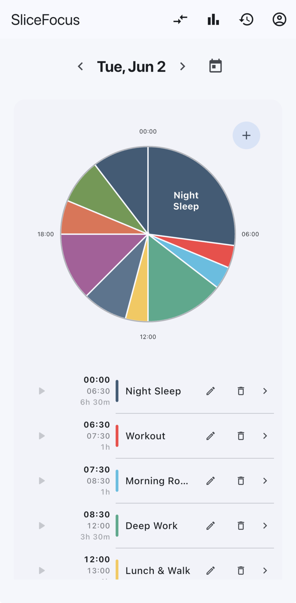
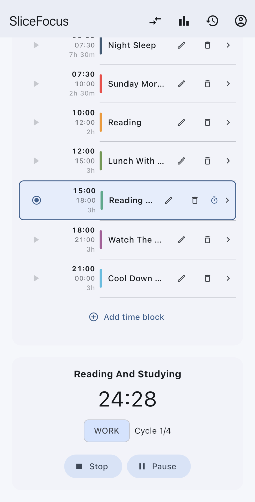
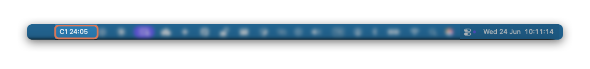

Plan your day on a clock
Sketch your whole day as colored blocks on a single 24-hour face. One glance shows where your time actually goes, and the empty gaps show where it doesn’t.
Made for people who use time blocking and Pomodoro.
SliceFocus lays your day out on a 24-hour circle and moves from one focus block to the next on its own — no timers to start, no taps between tasks. And the session is yours, not your device’s: it runs on your Mac and your iPhone at the same time, in step.


One app for iPhone and Mac.
How it works
Sketch your day as colored blocks on a 24-hour radial canvas — one glance shows where your time actually goes. Tap a block to start a focus session with a built-in Pomodoro timer.
When a block ends, the next one begins on its own. No alarm to dismiss, no “start” button to find — you just keep working while the clock moves underneath you. Start on your Mac and the same session is on your iPhone; start on your phone and the Mac picks it up.

Features
Sketch your whole day as colored blocks on a single 24-hour face. One glance shows where your time actually goes, and the empty gaps show where it doesn’t.
A focus session belongs to you, not to the device you started it on. Start on the Mac and your iPhone shows the same session; pause, skip or stop on either and the other follows. Work hands over to break and back everywhere at once.
Leave your desk for the break and take the timer with you: the countdown sits on your phone’s lock screen with no app to keep open, a notification tells you when the break is over, and the Mac menu bar is showing the same session when you get back.

Pick the apps and websites that pull you away. During every work phase they stay out of reach; every break lets them back in. A session started on your iPhone shields your Mac too, and the other way round.
On iPhone and iPad, Focus Shield uses Screen Time, so the apps, categories and sites you pick are blocked system-wide, nothing extra to install. On the Mac, switching to a listed app brings up a shield window instead of the app, and websites are blocked by a browser extension: the Safari one ships inside the Mac app and is switched on once in Safari’s Extensions settings; the Chrome one is a separate install, on its way to the Chrome Web Store.
Why it works
SliceFocus leans on a few things the research is fairly clear about:
Switching tasks leaves part of your attention stuck on the one you just left — what researchers call attention residue.
Leroy, “Why is it so hard to do my work?” — Organizational Behavior and Human Decision Processes, 2009.
Deciding in advance when and where you’ll do something reliably improves follow-through.
Gollwitzer & Brandstätter, “Implementation Intentions and Effective Goal Pursuit” — Journal of Personality and Social Psychology, 1997.
Interruptions don’t just cost the moment — getting your focus back afterward takes real mental effort.
Mark, Gudith & Klocke, “The Cost of Interrupted Work” — Proc. CHI, 2008.
Seeing your plan laid out in front of you offloads work your memory would otherwise have to carry.
Kirsh & Maglio, “On Distinguishing Epistemic from Pragmatic Action” — Cognitive Science, 1994.
These are findings about attention and planning in general, not studies of SliceFocus. We just tried to build with the grain of them.
Early days
SliceFocus is young and moving fast: new features land every release, shaped directly by the people using it. There’s no subscription required — just download it and start planning. If something feels rough or you have an idea, we’d genuinely like to hear it.